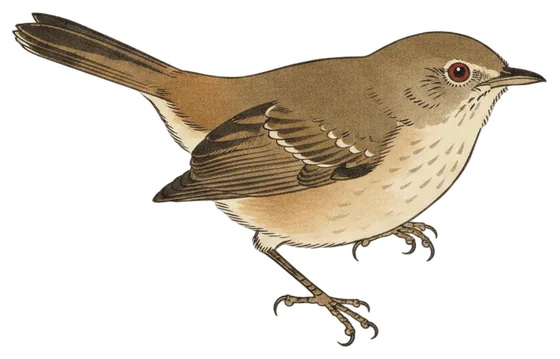

Return
Brown thornbill back after 31 days unheard
A single afternoon call marks the return of a small mimic, while 15 species and 244 calls fill the 24 hours to 9:30 pm.

The Brown Thornbill is back. It was heard once, at 2:11 pm today, after 31 days without a call. It has now turned up on 2 of the 55 days the station has been listening.
It is one of the most widespread birds around Canberra and lives in the region year-round, so the long gap is a gap in detection rather than in presence. Still, one call in a whole day is a slight way to mark a return.
The species is a skilled mimic, copying the alarm calls of other birds such as the New Holland honeyeater to deter predators. Today it offered no imitations for the microphone, just the one call, and then nothing more before press time.
- Calls
- 1
- First heard
- 2:11 pm
- Best call
- 91%
- Days heard
- 2 of 55